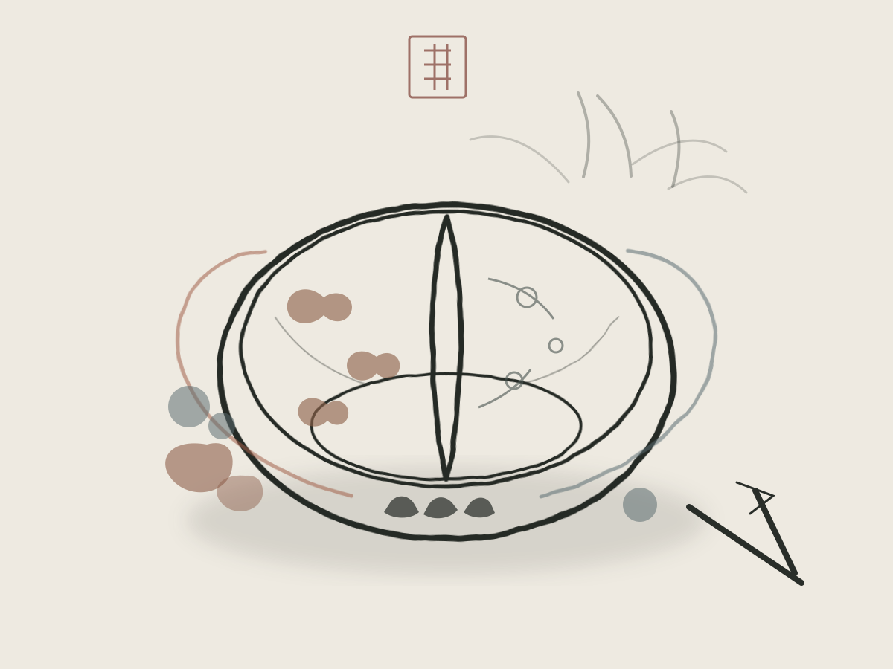
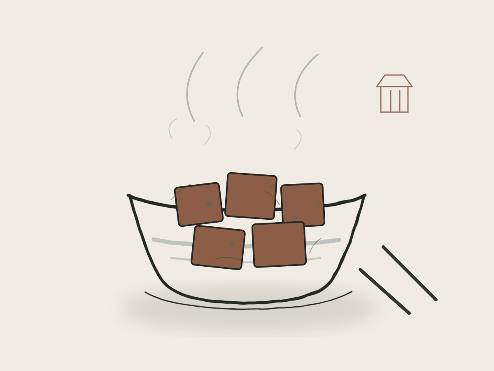
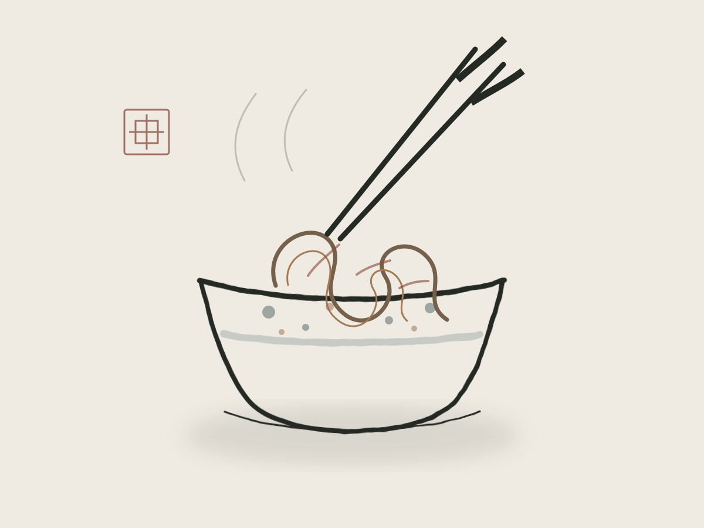

01 / HOTPOT
热烈 · 红油翻滚
成都火锅
牛油在铜锅里翻涌，花椒与辣椒把香气一层层推高。毛肚七上八下，鸭肠一烫即起，蘸一碟香油蒜泥，热辣与鲜香便都有了去处。
>TASTE · 一菜一格，百菜百味
成都的味，不止麻辣。红油的热烈、豆花的温柔、面条的利落与盖碗茶的从容，在一日三餐里交替落笔，写出这座城最生动的人间烟火。

FOUR TASTES · 四味成都
从翻滚的红油到一盏清茶，成都人把日子过得有滋有味。以下四味，是初识成都最妥帖的入口。
热烈 · 红油翻滚
牛油在铜锅里翻涌，花椒与辣椒把香气一层层推高。毛肚七上八下，鸭肠一烫即起，蘸一碟香油蒜泥，热辣与鲜香便都有了去处。
>
醇厚 · 麻婆豆腐
麻、辣、烫、香、酥、嫩、鲜、活，八字诀都落在这一碗里。豆腐嫩而不散，红油亮而不燥，最宜配一碗白米饭。

利落 · 街巷小面
芽菜、肉臊、花生碎与红油在碗底相逢。面条细而筋道，拌开时香气直上，是成都街头最日常也最难忘的一口。

从容 · 茶烟半日
茶盖轻叩，茶香渐起。竹椅一坐，龙门阵便摆开了。成都的慢，不在别处，就在这一盏续了又续的茶里。
“食在中国，味在四川。”一席成都，尝的是味道，也是性情